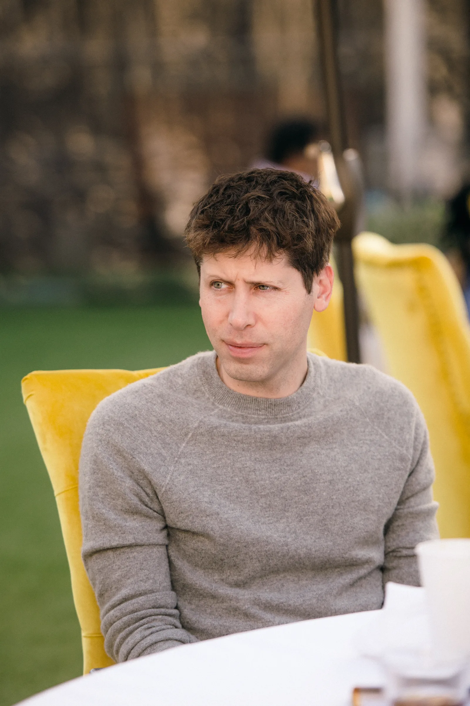

▲ 2017년 최초 공개된 로드스터 프로토타입. 당시 받은 예약금과 똑같은 금액으로 9년 만에 예약이 재개됐다 ⓒ Wikimedia Commons
테슬라가 10월 1일 차세대 로드스터 공개를 열흘 앞두고, 공식 홈페이지에 예약 페이지를 다시 열었다. 예약금은 2017년과 똑같은 5만 달러(약 7000만원). 문제는 2017년에 같은 금액을 내고 예약한 사람들 중 상당수가 9년이 지난 지금까지도 차를 받지 못했다는 점이다. 온라인에서는 곧바로 "차는 아직 없는데 또 7000만원이냐"는 조롱 섞인 반응이 쏟아졌다.
1. 예약 재개, 정확히 어떻게 이뤄지나
테슬라는 10월 1일 텍사스 웨이코 공개 행사를 앞두고 차세대 로드스터 예약 페이지를 재가동했다. 결제 방식은 2017년 최초 예약 당시와 동일한 2단계 구조다. 먼저 신용카드로 5000달러를 즉시 결제하고, 이후 10일 이내에 나머지 4만 5000달러를 계좌 이체로 송금해야 예약이 최종 확정된다. 두 단계를 합치면 총 5만 달러, 원화로 약 7000만원에 이른다. 캐나다의 경우 6000달러 카드 결제와 5만 8000달러 송금으로 금액 구조가 다르게 책정된 것으로 전해졌다.
테슬라는 이번에 받는 예약금이 전액 환불 가능하다고 안내하고 있다. 즉 10월 1일 공개 행사에서 실물과 사양을 확인한 뒤 마음이 바뀌면 예약을 취소하고 돈을 돌려받을 수 있다는 설명이다. 이는 2017년 최초 예약 당시에도 마찬가지였지만, 실제로는 환불 요청이 매끄럽게 처리되지 않았다는 불만도 함께 제기돼 왔다.
✅ 이번 예약금 결제 구조
· 1단계: 신용카드로 5000달러(미국 기준) 즉시 결제
· 2단계: 10일 이내 나머지 4만 5000달러 계좌 송금
· 합계: 총 5만 달러(약 7000만원), 2017년 최초 예약금과 동일한 금액
· 환불: 테슬라 안내상 전액 환불 가능

▲ 2017년 로드스터 프로토타입 측면 모습. 당시 제시된 시작가 20만 달러, 예약금 5만 달러 구조가 이번 재예약에도 그대로 적용됐다 ⓒ Wikimedia Commons
2. 9년째 이어지는 지연 — 로드스터 발표의 역사
2017년 11월, 테슬라는 세미트럭 공개 행사 무대에서 트레일러 문이 열리며 로드스터가 깜짝 등장하는 연출로 처음 이 차를 세상에 알렸다. 당시 2020년 생산 시작을 약속했지만, 이후 일정은 해마다 새로 잡혔다가 지켜지지 않는 패턴이 반복됐다.
| 시점 | 내용 |
|---|---|
| 2017년 11월 | 세미트럭 공개 행사에서 프로토타입 깜짝 공개, 2020년 생산 예고, 예약금 5만 달러 접수 시작 |
| 2020~2023년 | 생산 목표 연도 여러 차례 순연 |
| 2024년 2월 | 머스크, "연말 공개·2025년 초 인도" 재약속 — 역시 무산 |
| 2026년 4~8월 | 데모 행사 일정이 4월→5·6월→8월 이후로 4차례 연속 연기 |
| 2026년 9월 | 10월 1일 공개 예고 + 예약금 5만 달러 재접수 시작 |
| 2026년 10월 1일(예정) | 텍사스 웨이코에서 정식 공개 행사 |
| 업계 전망 | 실제 양산·인도는 2027~2028년 이후로 관측 |
즉 이번에 예약금을 내는 고객은 공개 행사조차 열리지 않은 상태에서 돈부터 내는 것이 아니라, 공개는 임박했지만 실제 양산까지는 여전히 1~2년 이상 남아있는 상태에서 돈을 내는 셈이다. 9년 전과 본질적으로 크게 다르지 않은 구조라는 지적이 나오는 이유다.

▲ 스페이스X 맥그리거 시험장의 로켓엔진 연소 시험 모습. 로드스터에 적용될 예정인 냉가스 추진 옵션 개발 지연이 최근 데모 일정이 거듭 밀린 핵심 원인 중 하나로 꼽힌다 ⓒ SpaceX, Wikimedia Commons (CC0)
3. 왜 하필 지금, 다시 예약을 받나
업계에서는 이번 예약 재개가 10월 1일 공개 행사를 앞두고 관심과 신뢰도를 동시에 끌어올리려는 전략이라는 분석이 나온다. 실물 공개 직전에 예약을 받으면, 소비자 입장에서는 "이번엔 실제로 나오는 게 맞다"는 신호로 받아들일 가능성이 크다. 실제로 테슬라는 예약 페이지 개설과 함께 공식 홈페이지에 카운트다운을 띄우며 분위기를 조성하고 있다.
📍 환불 가능이 강조되는 이유
테슬라가 이번 예약금이 전액 환불 가능하다는 점을 강조하는 것은, 9년째 차를 받지 못한 1차 예약자들에 대한 여론이 곱지 않다는 점을 의식한 조치로 풀이된다. "공개 행사에서 실물을 보고 마음에 안 들면 언제든 취소할 수 있다"는 안전장치를 내세워, 선입금에 대한 심리적 부담을 낮추려는 전략인 셈이다.
테슬라의 예약 재개 소식과 관련 반응은 아래에서 확인할 수 있다. 오토헤럴드 원문 바로가기
4. 예약자·시장 반응 — "샘 올트먼도 겪은 일"
이번 재예약 소식에 가장 자주 소환되는 사례가 오픈AI CEO 샘 올트먼의 이야기다. 올트먼은 2018년 5만 달러를 내고 로드스터를 예약했지만, 2025년 말 "7년 반을 기다렸다"며 환불을 요청했다. 그런데 문의 이메일이 반송되는 등 절차가 매끄럽지 않았고, 그는 이 과정을 SNS에 캡처와 함께 공개했다. 이에 일론 머스크는 "환불은 24시간 안에 처리됐다"고 반박하며 두 사람 사이에 공개적인 설전이 벌어지기도 했다.

▲ 오픈AI CEO 샘 올트먼. 2018년 로드스터를 예약했던 그는 2025년 말 "7년 반을 기다렸다"며 환불을 요청해 화제가 됐다 ⓒ Village Global, Wikimedia Commons (CC BY 2.0)
이 사례는 이번 재예약 소식이 알려지자마자 국내외 온라인 커뮤니티에서 다시 회자됐다. "실리콘밸리 억만장자도 7년 넘게 기다리다 지쳐 환불을 요구한 차인데, 왜 아직도 같은 방식으로 예약금부터 받느냐"는 냉소적인 반응이 다수였다. 반면 일부 팬층에서는 "이번엔 공개 일정이 실제로 잡혔다는 점에서 과거와 다르다"며 기대를 거두지 않는 분위기도 감지된다.
5. 이번엔 다를까 — 회의적 시선과 전망
10월 1일 공개 행사가 예정대로 열린다 해도, 그것이 곧 양산과 인도를 의미하지는 않는다. 머스크와 테슬라 경영진이 최근 언급한 실제 양산 목표는 여전히 2027~2028년 수준에 머물러 있다. 공개 행사에서 최종 사양과 가격, 생산 계획이 발표되더라도, 실제 고객 인도까지는 최소 1~2년의 시간이 더 필요하다는 뜻이다.
✅ 예약을 고려한다면 짚어야 할 것
· 이번 예약금도 공개(reveal)일 뿐, 양산·인도 확정을 의미하지 않는다는 점
· 2017년 1차 예약자 중 일부가 9년째 차를 받지 못한 전례가 있다는 점
· 테슬라가 안내하는 환불 가능 조건과 절차를 사전에 문서로 확인해둘 필요가 있다는 점
· 스페이스X 냉가스 추진 옵션 등 일부 사양은 여전히 개발·규제 검증 단계에 있다는 점
결국 이번 예약 재개는 "9년 만에 실체가 드러나는 순간"이라는 기대와 "또 한 번의 선결제 요구일 뿐"이라는 회의가 동시에 교차하는 지점에 서 있다. 10월 1일 공개 행사에서 어떤 실물과 일정이 나오는지가, 이번 예약금이 3차 지연으로 이어질지 아니면 마침내 결실을 볼지를 가늠할 첫 시험대가 될 전망이다.
6. 요약
테슬라가 10월 1일 로드스터 공개를 앞두고 예약 페이지를 다시 열었다. 예약금은 2017년과 동일한 5만 달러(약 7000만원)로, 신용카드 5000달러 선결제 후 10일 내 4만 5000달러 송금을 요구하는 구조다. 테슬라는 전액 환불이 가능하다고 안내한다.
문제는 2017년 첫 예약자 중 일부가 9년째 차를 받지 못했다는 점이다. 오픈AI CEO 샘 올트먼이 7년 반 만에 환불을 요청해 일론 머스크와 설전을 벌인 사례가 대표적으로 재소환되면서, 온라인에서는 이번 재예약에 대한 냉소적 반응이 적지 않다.
실제 양산 목표는 여전히 2027~2028년으로 언급되는 상태다. 10월 1일 공개 행사가 실제 일정 이행으로 이어질지, 아니면 또 다른 지연의 시작이 될지는 조금 더 지켜봐야 할 것으로 보인다.